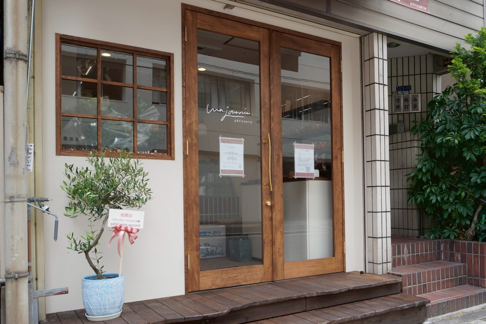

Gâteaux
ショートケーキ
軽やかなクリームと季節の果実。まず選びたくなる定番です。
¥620
ma journée pâtisserie
フランスで暮らした日々のように、お菓子がいつもの食卓にあること。谷町六丁目・谷町九丁目エリアの小さな店から、生ケーキと焼き菓子を毎日ていねいにお届けします。
Products
生ケーキ、焼き菓子、季節限定のお菓子を少しずつ。ご来店前に、どんな商品があるお店か分かるようにまとめました。
商品は季節や仕入れにより変わります。日々のラインナップは公式Instagramでお知らせしています。
Gâteaux
軽やかなクリームと季節の果実。まず選びたくなる定番です。
¥620
Tarte
香ばしいタルトに、みずみずしい果実を重ねました。
¥680
Mont Blanc
香り豊かなクリームを重ねた、午後のお茶に合う一品です。
¥650
Baked
発酵バターの香りと、しっとり焼き上げた生地。
¥240
Sablé
さくっとほどける食感。小さな贈り物にも。
¥320
Gift
人気のお菓子を少しずつ。手土産に選びやすい詰め合わせです。
¥1,650Concept
ma journée は、フランス語で「私の一日」。フランスで暮らす中で出会った、お祝いの日にも、食後にも、週末の団らんにも、当たり前のようにお菓子がある景色が名前の原点です。何気ない一日の中に、少し心がほどける時間があってほしい。焼き菓子の香り、ショーケースの彩り、包みを受け取るときの静かな高揚が、その日の記憶にやさしく残りますように。
Feature
小さなお店だからこそ、焼き色や香りのわずかな変化に目を向けながら、その日いちばんの状態でお届けしています。特別な日ではない、ふつうの一日にこそ似合うお菓子を。
Signature
ひと口ごとに広がる、発酵バターのまろやかなコク。しっとりと焼き上げた生地は、時間がたつほどに風味がなじみ、やさしい余韻を残します。手土産にも、自分への小さなご褒美にも。今日という一日に、ほっとするひとときを添える定番です。
焼き菓子の商品を見る

Season
旬の果実は、香りや酸味の立ち方を見ながらひとつずつ仕立てます。さくっと香ばしいタルト生地に、みずみずしい果実となめらかなクリームを重ねて。ひとくちで季節を感じる、その時期だけの一皿です。口どけの余韻まで、どうぞゆっくりお楽しみください。
季節のケーキを見るProducts
News
Shop
大阪市中央区東平にある、小さなパティスリーです。木の扉とくすみピンクのオーニングを目印にお越しください。
